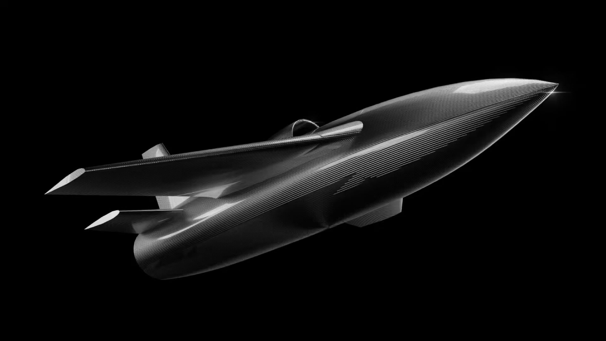

Nightshade family, one airframe, three configurations
One turbojet airframe in three configurations: an economical target drone, a premium long-range target drone, and the Mk II loitering munition. Nightshade delivers point-target accuracy under electronic warfare at unit economics that allow sustained salvo employment.

What Nightshade is, and the gap it closes
Striking high-value targets across operational depth requires three properties at once: terminal precision, high cruise speed, and expendable economics. Slow loitering munitions fly at 100–200 km/h. That sluggish profile leaves them vulnerable to radar-directed cannon, short-range surface-to-air missiles, and tactical radio jammers. Traditional cruise missiles survive and hit reliably, but cost ₹20–35 crore per round. At that price, armed forces cannot fire salvos without exhausting inventories within days.
Nightshade resolves this contradiction. A compact turbojet propels the airframe at 550 km/h in cruise and 650 km/h in terminal dive, shrinking the defender's engagement window to seconds. When satellite signals fail under hostile jamming, the strike configuration's onboard four-tier navigation stack maintains track until the dual-band imaging seeker acquires the target silhouette. Priced at roughly ₹1.5 crore (≈$150,000), Nightshade turns high-speed strike into an attritable munition. It is the first platform family to run the Apollyon shared core.
Three configurations, one airframe
| Variant | Role | Payload | Range | Terminal speed | Navigation | Control link | Est. cost | Status |
|---|---|---|---|---|---|---|---|---|
| Nightshade Mk I | Technology demonstrator | — | 20 km | 650 km/h | GNSS only | — | — | Done · flown 2026 |
| Target drone · Economical | Aerial target | Luneberg lens (3 m²), smoke & IR flares | 300 km | 650 km/h | Multiband GNSS · anti-jam / anti-spoof | 50 km LOS | $90,000 | Prototype Q4 2026 |
| Target drone · Premium (ADX-1 Premium) | Long-range aerial target | Luneberg lens (3 m²), smoke & IR flares | 300 km | 650 km/h | Dual-antenna GNSS · primary + backup | ~300 km-class LOS · satcom BVLOS | ~$150,000 | Prototype Q4 2026 |
| Loitering munition · Mk II | Strike / SEAD / decoy | 15 kg HE-frag / shaped charge (modular) | 300 km | 650 km/h | 4-element CRPA · multiband GNSS · INS · EO/IR seeker | 50 km LOS | ~$150,000 | Prototype Q1 2027 |
All three configurations share the 40 kgf / 400 N turbojet, 550 km/h cruise, 650 km/h terminal, 300 km range, 40 min endurance, 86 kg MTOW, ~15,000 ft ceiling, catapult / tactical-vehicle / RATO launch and parachute recovery. They differ only in control link and payload. Costs are internal engineering estimates, September 2026.
Mk II, in full
Tentative figures marked in the internal comparison file: CEP < 10 m, indigenous content ~45–50%, unit flyaway ≈ $150k. Specification is configuration-dependent and confirmed per contract.
Three configurations, several missions
The same airframe leaves the line as an economical target drone, a premium target drone, or the Mk II loitering munition. Mk II flies the strike, SEAD and decoy missions; the two target drones fly air-defence training.
Precision strike
Autonomous strikes on static tactical assets without continuous data links. The dual-band seeker locks onto target features independently of satellite signals, destroying command posts, fuel dumps, revetted aircraft, and ammunition hubs.
SEAD / counter-radar
Strikes on air-defence radars, fire-control units and jammers at pre-planned locations, with the EO/IR seeker for terminal lock. Opens corridors through air defences without risking crewed aircraft.
Air-defence training target
The two target-drone configurations carry a Luneberg lens (3 m²), smoke and IR flares in place of a warhead, giving air-defence crews a realistic 650 km/h target. Live-fire training consumes units on recurring operational budgets. See target-drone details below.
Decoy
A Mk II role: the airframe presents a credible strike signature and pulls interceptors and radar attention away from the attacking package. It launches from the same rail, is flown by the same crew, and runs the same flight-control baseline.
The Tonbo TRAP-1 seeker
A strike munition depends fundamentally on its terminal seeker, yet high-resolution sensors are frequently throttled by foreign export regimes. Apollyon integrates the TRAP-1 dual-band EO/IR sensor through an engineering partnership with Tonbo Imaging in Bengaluru. This domestic partnership anchors focal-plane array manufacturing and optical assemblies inside Indian industrial base.
The seeker combines infrared and visible-spectrum channels, with onboard automatic target recognition and tracking for the final approach. Terminal guidance is autonomous and pre-planned (fire-and-forget); claimed CEP is under 10 m with a visual lock. Seeker subsystem →
Ground-mobile, with a validated launch record
Nightshade Mk II launches from a catapult, from a tactical vehicle, or under rocket-assisted take-off (RATO) from an unprepared position. Two operators erect, fuel, and initialize the system in under 25 minutes without heavy engineering machinery, and the round recovers by parachute when it is not expended against a target. In early 2026, Apollyon demonstrated this by launching the jet airframe from a moving car. Detailed launch mechanics appear in launch and ground systems.

The target-drone configurations, and why they matter commercially
Both target drones use the same composite airframe, turbojet and autopilot hardware as Mk II, with no warhead, seeker, CRPA array or inertial reference. In place of the warhead they carry a Luneberg lens (3 m²), smoke flare and IR flare. Flying at 650 km/h, they simulate hostile missiles and attack aircraft for live-fire training by naval and ground-based air-defence units.
- Economical · $90,000. 50 km line-of-sight link, multiband GNSS with an anti-jam, anti-spoof front end. The only turbojet target at its price with parachute recovery.
- Premium (ADX-1 Premium) · ~$150,000. ~300 km-class line-of-sight link with satcom beyond line of sight, dual-antenna GNSS with independent backup receiver, and a deliberately non-Chinese bill of materials. The link is about $52,000 of the cost and needs a ground azimuth/elevation tracker to realise in the field.
The target drones serve four commercial and industrial objectives:
- Sustained revenue: Armed forces buy target drones through operational expenditure (OpEx) budgets. These funds recur annually and bypass the multi-year procurement delays typical of capital weapons acquisition.
- Live flight validation: Peacetime air-defence exercises generate dozens of live flights across varied operational climates, refining flight control algorithms and engine reliability on customer funding.
- Immediate export access: Because the target drone is an unarmed training asset, export clearance requires fewer regulatory hurdles than offensive strike weapons, enabling early bilateral sales in friendly markets.
- Order book: A pilot purchase order is signed with Tonbo Imaging for the Nightshade platform, covering the target-drone configuration through 2026. Field trials and certification follow in 2027, ahead of one-way effector mass production.
Target-drone prototype Q4 2026, production from Q1 2027; Mk II loitering-munition prototype Q1 2027, production from Q3 2027; field trials and certification across 2027, mass production from 2028. The generation plan →
Subsystems used
Benchmarks against the field: each configuration against its named rivals →